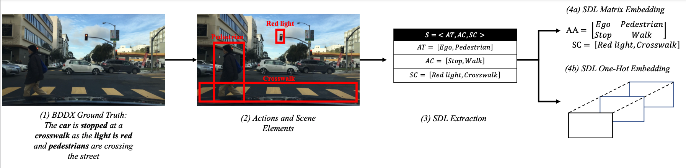
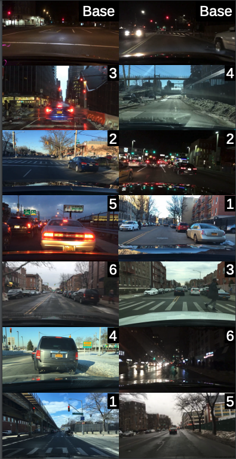

Safety assessments for automated vehicles need to evolve beyond the existing voluntary self-reporting. There is no comprehensive measuring stick that can compare how far each AV developer is in terms of safety. Our goal in this research is to answer the following question: How can we fairly compare two different AV implementations? In doing so, the aim of this work is to make progress towards an innovative certification method allowing for a fair comparison between AVs by comparing them on similar traffic situations. The goal of our research is to provide a common metric that will facilitate the comparison of different autonomous vehicle algorithms. In order to compare the different AVs, we need to observe them under similar traffic conditions or scenarios. Our goal therefore is to find similar traffic scenarios from the datasets generated by different AVs. Having found similar traffic situations, we can then observe if the output of one AV is more safe/optimal compared to another.
We propose Scenario2Vector - a Scenario Description Language (SDL) based embedding for traffic situations that allows us to automatically search for similar traffic situations from large AV data-sets. Our SDL embedding distills a traffic situation experienced by an AV into its canonical components - actors, actions, and the traffic scene. We can then use this embedding to evaluate similarity of different traffic situations in vector space.
We present a first of its kind -Traffic Scenario Similarity (TSS) dataset. This dataset contains 100 traffic video samples (scenarios) and for each sample, it contains 6 candidate scenario videos ranked by human participants based on its similarity to the baseline sample.
